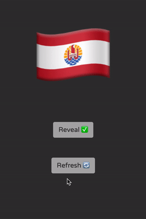
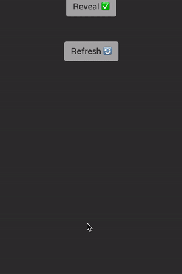

shiny::runGitHub("randoflag", "matt-dray", "main")
tl;dr
I wrote a teeny-weeny R Shiny app to serve me a flag challenge whenever I open a new browser tab.
A vexatious request
I thought it would be fun to set my browser tabs to open with thiscatdoesnotexist.com, which serves a random ersatz ‘cat’ as hallucinated by StyleGAN.1 It’s kind of terrifying and time for a change.
We probably accumulate hours of time looking at fresh browser tabs, so why not exploit that for fun and learning? I wanted something visual, quick and low stakes, so… world flags?
My needs were simple: show a mystery flag; reveal who it belongs to; refresh.2 So I built a little {shiny} app, put it in a GitHub repo and served it.
On the front-end you’re presented one of over 250 (!) emoji flags3 at random. There’s a button to reveal the country it represents and another button to refresh the page via {shinyjs}. The back-end just samples a flag from the {emo} package and waits for you to hit refresh. The {bslib} package made it easy to generate a theme that keeps focus on the flag.
So now I’ve set my new tabs to open at https://mattdray.shinyapps.io/randoflag/ (tested on Firefox, Chrome and Safari on iOS 14) and I know what the Guadeloupe flag looks like now.
Hoisting the app
The app is currently hosted online via shinyapps.io and I’ve embedded it below. It’s highly likely I’ll take it down at some point.
If it does get yoinked from the internet, you can install and run the app from your R session:
You’ll need {shiny}, {bslib} and {shinyjs} installed from CRAN and you can get {emo} using remotes::install_github("hadley/emo").
Half-mastery
Beware: some emoji flags are shared by more than one geographic entity…

Environment
Session info
Last rendered: 2023-07-17 21:10:01 BSTR version 4.3.1 (2023-06-16)
Platform: aarch64-apple-darwin20 (64-bit)
Running under: macOS Ventura 13.2.1
Matrix products: default
BLAS: /Library/Frameworks/R.framework/Versions/4.3-arm64/Resources/lib/libRblas.0.dylib
LAPACK: /Library/Frameworks/R.framework/Versions/4.3-arm64/Resources/lib/libRlapack.dylib; LAPACK version 3.11.0
locale:
[1] en_US.UTF-8/en_US.UTF-8/en_US.UTF-8/C/en_US.UTF-8/en_US.UTF-8
time zone: Europe/London
tzcode source: internal
attached base packages:
[1] stats graphics grDevices utils datasets methods base
loaded via a namespace (and not attached):
[1] htmlwidgets_1.6.2 compiler_4.3.1 fastmap_1.1.1 cli_3.6.1
[5] tools_4.3.1 htmltools_0.5.5 rstudioapi_0.15.0 yaml_2.3.7
[9] rmarkdown_2.23 knitr_1.43.1 jsonlite_1.8.7 xfun_0.39
[13] digest_0.6.31 rlang_1.1.1 evaluate_0.21 Footnotes
Reuse
CC BY-NC-SA 4.0